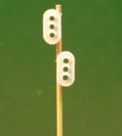
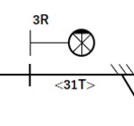
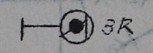

そのほか
ストラクチャ等。信号機がメインです。

|
腕木式信号機トミックスから発売されました！特に改造なしです。 |

|
発条転轍器トミックスのポイントに付属のもの。2個つかってありがちなローカル駅。 |

|
自動信号システムエレクトロニクス工作で、自動信号システムを開発中です。まずは閉塞信号機から。 |
|  |
自動信号システム(駅)制御盤から駅の信号、ポイントを制御するシステムです。AWSでIoTしてます。 |
|  |
自動信号システム(駅―警戒現示)警戒現示の単純な交換駅です。 |
|  |
信号システムの研究主に継電連動のシステムの研究をはじめました。 |